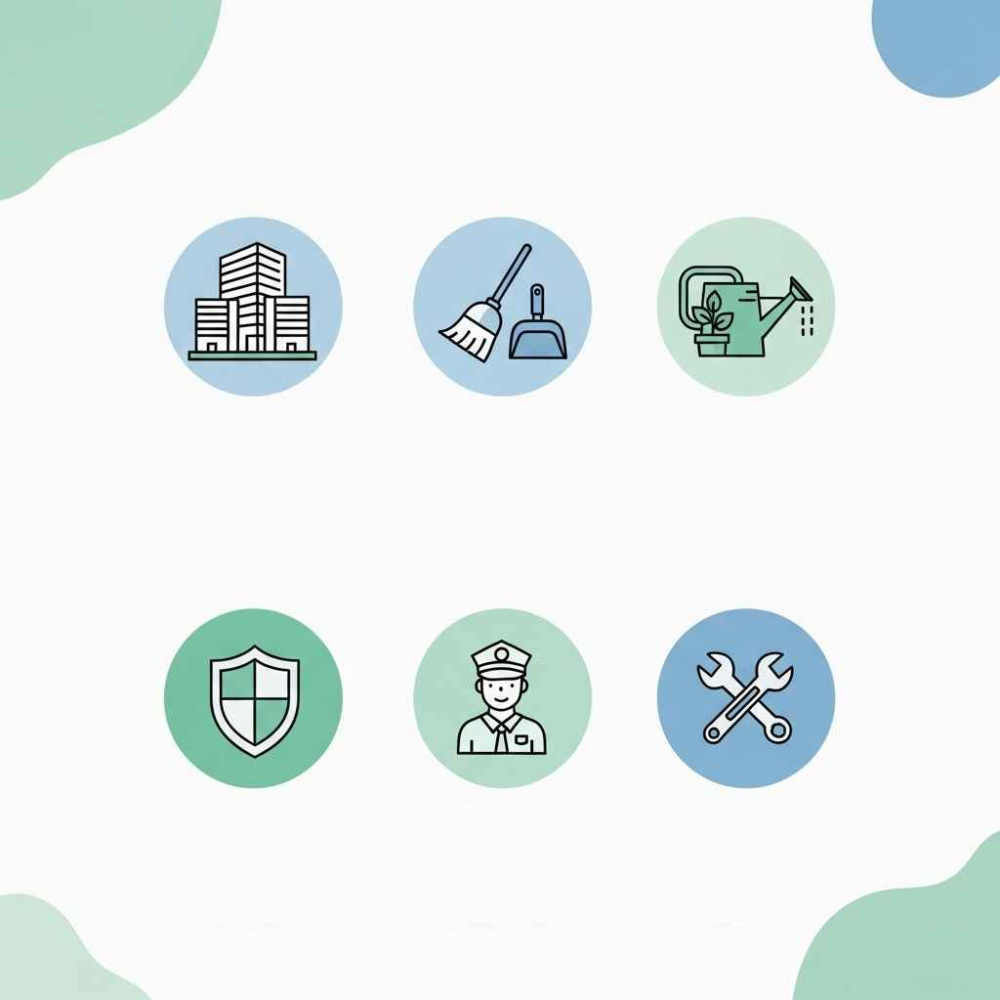

变更历史
| 日期时间 | 类型 | 作者 | 描述 |
|---|---|---|---|
| 2025-06-09 | 增 | Capric | 表格版 |
| 2025-06-21 | 改 | Capric | 将表格转换为移动端适应的分级标题和正文 |
* 查询人： 期 栋 单元 *

目标： 保障小区管理的有序进行，提供高效、透明的各项服务。
公示组织架构，配备足够的、专业的管理和服务人员。
1. 人员架构图： 是否公示，是否清晰。
2. 人工成本： 员工薪酬、社保、福利、培训费用的预算与决算。
3. 办公费用： 物业中心的水、电、通讯、办公用品等费用的公示。
4. 培训工作： 活动名称，时间，场地，参与人数。
建立有效沟通渠道，及时响应业主诉求，定期公示工作信息。
1. 服务响应率： 求助、报修的响应时间与完成率。
2. 沟通记录： 业主拜访记录、会议纪要。
3. 信息公开： 通知、报告的发布频率、覆盖面和及时性。
4. 年度/季度报告： 是否按时提交，内容是否详实。
组织社区活动，营造和谐的社区氛围。
1. 活动计划与总结： 年度/季度活动计划及开展情况。
2. 经费明细： 活动物料、场地、人员等费用的预算和决算公示。
3. 节日装饰： 装饰方案、材料费、人工费、仓储管理记录。
协助处理装修、空置房、公共保险等公共事务。
1. 装修管理档案： 装修申请、巡查记录、违规处理记录。
2. 空置房巡查记录： 巡查时间、房屋状况、异常情况处理。
3. 公共责任险： 保险合同、保单号、保险范围、理赔流程是否公示。
目标： 维持小区公共环境干净、整洁、卫生。
对公共区域进行标准化、高频次的清扫保洁，及时清运垃圾。
1. 保洁范围与频次表： 是否制定并公示。
2. 人员配置： 保洁员数量、岗位职责、工作时间。
3. 物料消耗清单： 清洁工具、清洁剂、垃圾袋的采购品牌、数量、费用。
4. 垃圾清运记录： 每日垃圾清运时间、车次。
对特定区域或设施进行定期的深度清洁和维护。
1. 作业计划与记录： 明确各专项工作的执行频率、标准和记录。
2. 费用明细： 如外包清洗车库、清掏化粪池等的合同及发票。
3. 消杀记录： 消杀范围、频次、药剂品牌、安全说明、费用。
目标： 保持植物健康生长，提升园区景观品质。
建立并维护小区完整的绿化信息档案。
1. 绿化总面积： 具体数值（m²）。
2. 植物清单与分布图： 乔木、灌木、草坪、花卉的种类、数量。
3. 养护等级： 合同约定的养护标准（一级/二级/三级）。
根据季节和植物生长周期，进行浇水、施肥、修剪、防治病虫害等。
1. 修剪记录： 修剪时间、区域、标准。
2. 灌溉与施肥记录： 用水量、肥料品牌、种类、用量、费用。
3. 病虫害防治记录： 病虫害种类、农药品牌、用量、费用、施
4. 杂草/枯叶清理记录： 清理频次、范围。
5. 补种记录： 补种区域、苗木品种、规格、数量、树苗单价、人工费、总花费。
6. 人工/工具成本： 绿化工人数量、工资；工具购置、维修、能耗费用。
目标： 保障小区人身、财产安全，维护公共区域的正常秩序。
秩序维护员24小时在岗，规范管理外来人员和车辆。
1. 人员排班表： 各岗位人员数量及工作时间。
2. 门岗登记记录： 外来人员、车辆登记本或电子记录。
3. 培训记录： 新员工及在职员工的培训内容与考核。
按规定路线和频次进行安全巡逻，确保监控系统正常运作。
1. 巡逻路线图与签到记录： 巡逻频次、路线、异常事件记录。
2. 监控系统完好率： 摄像头在线率、录像保存天数。
3. 监控维保记录。
定期检查维护消防设施，确保消防通道畅通，符合消防法规。
1. 消防设施检查维保记录： 灭火器、消防栓、水带、烟感等检查、维修、更换记录及台账。
2. 消防年检报告： 由有资质的第三方出具的年度检测报告。
3. 消防通道清理记录： 清理时间、位置、照片对比。
目标： 确保小区所有公共设施设备安全、正常运行。
维护楼宇主体、道路、休闲设施等。
1. 巡查记录： 每日/每周对公共设施的巡查日志。
2. 维修记录： 维修项目、时间、材料清单、费用明细。
3. 大型维修方案与合同： 如路面硬化、外墙刷漆等。
保证给排水、供电、弱电、电梯等系统正常运行。
1. 设备台账： 建立所有公共设备的清单和技术档案。
2. 专业维保合同： 电梯、配电房、二次供水等必须有专业公司维保合同，并公示。
3. 运行记录： 水箱清洗记录、能耗抄表记录、管道疏通记录、设备维修记录等。
4. 年检报告： 电梯等特种设备的年检合格证。